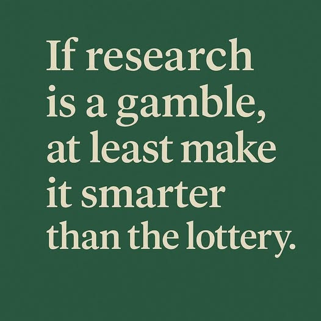

ความคุ้มค่าของการลงทุนวิจัยอาจถูกถามผิดมาตั้งแต่ต้น ถ้ายังไม่แยกให้ออกว่าความเสี่ยง ผลตอบแทน และความสำเร็จควรวัดอย่างไร
{kind=link}

บทความนี้เล่นกับคำถามเรื่อง ความคุ้มค่า ของการลงทุนวิจัยด้วยวิธีที่ทั้งตลกและคมมาก ผู้เขียนไม่ได้ตอบตรง ๆ ว่างานวิจัยคุ้มค่าหรือไม่ แต่ใช้คำถามเปรียบเทียบหลายชุดเพื่อทำให้เห็นว่าเกณฑ์ที่เราใช้วัด “ความคุ้มค่า” นั้นอาจสับสนปะปนกันอยู่ตั้งแต่ต้น
ตั้งแต่อาหารอร่อยแต่แพง อาหารมีโภชนาการแต่ไม่อร่อย ไขมันที่จุกอก ไปจนถึงการลงทุนป้องกันน้ำท่วมและการทำ start-up ผู้เขียนกำลังชี้ว่า การประเมินผลตอบแทนของการวิจัยไม่ใช่เรื่องตรงไปตรงมาแบบใส่ตัวเลขแล้วจบ เพราะมันเต็มไปด้วยคำถามเรื่องความเสี่ยง ภาระส่วนเกิน และผลลัพธ์ที่ไม่เกิดขึ้นก็อาจมีคุณค่าในตัวเอง
แกนสำคัญของโพสต์นี้คือการรื้อวิธีคิดแบบเส้นตรงที่ชอบถามเพียงว่า “ใส่เงินไปเท่านี้ ได้ผลตอบแทนกลับมาเท่าไร” ผู้เขียนใช้ตัวอย่างจากชีวิตประจำวันเพื่อชี้ว่า ต่อให้กินอาหารราคาแพงแล้วมีความสุข หรือกินของถูกแต่มีโภชนาการสูง คำว่า คุ้มค่า ก็ยังขึ้นอยู่กับเกณฑ์ที่เราเลือกใช้ตั้งแต่แรก
งานวิจัยเหมือน start-up ตรงที่ล้มเยอะ แต่ความสำเร็จไม่กี่ครั้งอาจชดเชยทั้งหมด
ตอนที่ผู้เขียนพูดถึงการลงทุนวิจัยหรือการตั้ง start-up จำนวนมากแล้วสำเร็จจริงเพียงหนึ่งเดียว เขากำลังชี้ให้เห็นธรรมชาติของระบบนวัตกรรมว่าไม่ได้ออกแบบมาให้ทุกโปรเจกต์สำเร็จเท่า ๆ กัน แต่ยอมให้มี failure จำนวนมากเพื่อเปิดทางให้ผลตอบแทนจากความสำเร็จบางชิ้นสูงพอจะคุ้มระบบโดยรวม
มุมนี้ทำให้การถามหาความคุ้มค่าของงานวิจัยเป็นรายโครงการอาจไม่พอ เพราะสิ่งที่ควรถูกมองอาจเป็น portfolio logic ของการลงทุนมากกว่าการตัดสินแบบชิ้นต่อชิ้น
การลงทุนป้องกันความเสี่ยงยิ่งวัดยาก เพราะถ้าปัญหาไม่เกิด เรามักไม่เห็นคุณค่าของสิ่งที่ป้องกันไว้
ตัวอย่างเรื่องน้ำท่วมในโพสต์นี้คมมาก เพราะมันชี้ถึงโจทย์คลาสสิกของการประเมินนโยบายเชิงป้องกัน ถ้าลงทุนป้องกันแล้วน้ำไม่ท่วม เราควรถือว่าคุ้มหรือไม่ ในอีกทางหนึ่ง ถ้าลงทุนไปแล้วเมื่อน้ำท่วมก็ยังป้องกันไม่ได้ เราจะตัดสินว่ามันล้มเหลวทั้งหมดหรือเปล่า
คำถามแบบนี้บังคับให้เรายอมรับว่า การประเมินวิจัยจำนวนมากเกี่ยวข้องกับ counterfactual หรือสิ่งที่ไม่ได้เกิดขึ้น ซึ่งวัดยากกว่าผลผลิตที่มองเห็นตรงหน้า
มุกเรื่องหวยใต้ดินไม่ใช่แค่ขำ แต่กำลังประชดวิธีคิดเชิงเศรษฐศาสตร์ที่เห็นแต้อัตราผลตอบแทน
ส่วนที่เสียดสีที่สุดคือการเอาสัดส่วนความสำเร็จและผลตอบแทนของการวิจัยไปเทียบกับหวยใต้ดิน พร้อมบอกว่า ถ้าคนไทยมองการลงทุนทำวิจัยเหมือนการแทงหวย ก็แสดงความเป็นนักเศรษฐศาสตร์ตัวยงของนักวิจัย นี่เป็นการประชดคม ๆ ต่อการใช้กรอบผลตอบแทนอย่างแข็งทื่อจนไม่เหลือพื้นที่ให้กับธรรมชาติของความรู้และนวัตกรรม
ประโยคที่ว่าคนเงินเดือน 15,000 บาทควรแทงหวย 300 บาทแทนทำวิจัย 300 บาท จึงไม่ได้ตั้งใจเสนอสูตรชีวิตจริง แต่ตั้งใจแสดงให้เห็นว่า ถ้าเราวัดทุกอย่างด้วยภาษาเดียวกันโดยไม่ดูบริบท เราอาจได้ข้อสรุปที่ดูมีเหตุผลแต่ ไร้สาระในทางปฏิบัติ
เสียงหัวเราะในบทความนี้ซ่อนคำเตือนว่า ถ้าระบบอยากได้งานวิจัยมากขึ้น ผลตอบแทนต้องเหนือกว่าการเสี่ยงโชคอย่างชัดเจน
ท้ายที่สุด ผู้เขียนปล่อยให้ผู้อ่าน “สรุปเอาเอง” แต่แกนที่ชัดมากคือ ถ้าสังคมหรือระบบนโยบายอยากให้คนมาทำวิจัยมากขึ้น การลงทุนและแรงจูงใจต้องชนะทางเลือกอื่นที่ง่ายกว่า เร็วกว่า และใช้แรงน้อยกว่า ไม่เช่นนั้นคนย่อมไหลไปหากิจกรรมที่ให้ผลตอบแทนคุ้มกว่าในมุมของตนเอง
ดังนั้น บทความนี้แม้จะห่อด้วยอารมณ์ขัน แต่จริง ๆ คือการตั้งคำถามเชิงระบบต่อ incentive structure ของงานวิจัย อย่างจริงจังมาก